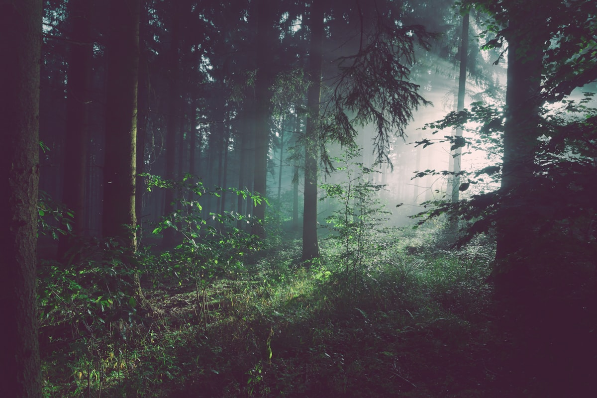
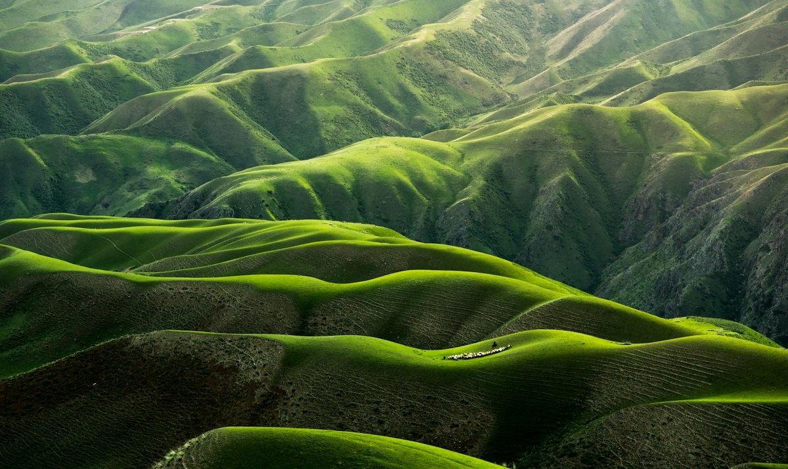

Forest Recovery
Restore native woodland structure and improve habitat connectivity through long-term planting and care.
We restore urban tree canopy, protect native habitats and equip communities to care for green spaces long after planting day.


Our restoration programs connect environmental action with community stewardship, helping neighborhoods create greener, cooler and more resilient public spaces.
Plant trees where shade and green infrastructure are needed.
Use suitable species to support healthier local ecosystems.
Give residents practical tools for long-term tree care.
Our programs are designed around local ecological conditions and community needs.
Restore native woodland structure and improve habitat connectivity through long-term planting and care.

Add shade trees to streets, parks and community spaces where additional canopy can make a difference.

Connect green spaces and strengthen ecological pathways through strategic restoration.

We monitor young trees, organize aftercare and keep supporters connected with the progress of restoration.
Volunteer your time, support restoration financially or follow the progress of projects through our impact portal.